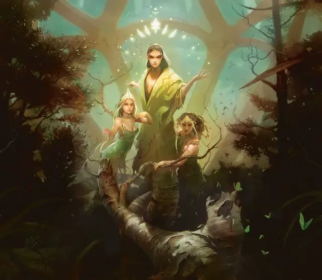

Тростани
Trostani
Большая Фея, нейтрально-добрая, именной НИП

Класс Доспеха 17 (природный доспех)
Хиты 252 (24к10 + 120)
Скорость 30 футов
| мод | спас | ||
|---|---|---|---|
| СИЛ | 19 | +4 | +4 |
| ЛОВ | 14 | +2 | +2 |
| ТЕЛ | 20 | +5 | +11 |
| мод | спас | ||
|---|---|---|---|
| ИНТ | 16 | +3 | +3 |
| МДР | 30 | +10 | +16 |
| ХАР | 25 | +7 | +13 |
Навыки Восприятие +16, Магия +9, Природа +9, Проницательность +16, Убеждение +13
Иммунитет к состояниям захват, очарование
Чувства тёмное зрение 120 футов, пассивное Восприятие 26
Языки Общий, Друидический, Сильван, Эльфийский
Опасность 18 (20000 опыта)
Бонус мастерства +6
Особенности
Врожденное колдовство. Базовой характеристикой заклинаний Тростани является Мудрость (Сл спасброска от заклинания 24).Она может накладывать следующие заклинания, не нуждаясь в материальных компонентах:
• Неограниченно: рассеивание магии [dispel magic], искусство друидов [druidcraft];
• 3/день каждое: благословение [bless], призыв животных [conjure animals], гигантское насекомое [giant insect], лунный луч [moonbeam], рост растений [plant growth], шипы [spike growth], внушение [suggestion];
• 1/день каждое: призыв феи [conjure fey], множественное лечение ран [mass cure wounds].
Легендарное сопротивление (3/день). Если Тростани проваливает спасбросок, вместо этого она может сделать спасбросок успешным.
Сопротивление магии. Тростани совершает с преимуществом спасброски от заклинаний и других магических эффектов.
Магическое оружие. Атаки оружием Тростани являются магическими.
Разговор со зверями и растениями. Тростани может общаться с животными и растениями, как если бы они говорили на одном языке.
Древесный шаг. Один раз в свой ход Тростани может использовать 10 футов своего перемещения, чтобы волшебным образом шагнуть в одно живое дерево в пределах ее досягаемости и выйти из второго живого дерева в пределах 60 футов от первого дерева, появляясь в незанятом пространстве в пределах 5 футов от второго дерева. Оба дерева должны быть Большого размера или больше.
ЧЕРТЫ Тростани.
Идеал:. «В каждом из нас - сила всех нас».
Привязанность:. «Все придут в теплые объятия Конклава».
Слабость:. «Я испытываю лишь гнев к тем, кто разрывает узы сообщества и покидает наши объятия».
Действия
Мультиатака. Тростани совершает три действия: использует Сжатие и Прикосновение Порядка, а также накладывает заклинание, время накладывания которого равно "1 действие".
Сжимание. . Рукопашная атака оружием: +11 к попаданию, досягаемость 5 фт., одно существо. Попадание: 15 (3к6 + 5) дробящего урона, и цель захватывается (Сл высвобождения 19). Пока этот захват не закончится, цель будет опутана. Тростани может захватывать не более трех целей одновременно.
Прикосновение порядка. . Рукопашная атака заклинанием: +16 к попаданию, досягаемость 5 фт., одно существо. Попадание: 23 (3к8 + 10) урона излучением, и Тростани может выбрать один магический предмет, который она может видеть во владении цели. Если это не артефакт, магия предмета подавляется до начала следующего хода Тростани.
Гнев Мат'Селеснии (перезарядка 5–6). Тростани вызывает мгновенный водоворот ветвей и лиан в точке, которую она может видеть в пределах 60 футов от себя. Каждое существо в 30-футовом кубе в этой точке должно совершить спасбросок Ловкости Сл 24, получая 21 (6к6) дробящего урона и 21 (6к6) рубящего урона при провале или половину этого урона при успехе.
Легендарные действия
Тростани может совершить 3 легендарных действия, выбирая из представленных ниже вариантов. За один раз можно использовать только одно легендарное действие, и только в конце хода другого существа. Тростани восстанавливает использованные легендарные действия в начале своего хода.
Голос гармонии. Тростани совершает одну рукопашную атаку с преимуществом.
Голос жизни. Тростани дарует 20 временных хитов другому существу, которое она может видеть в пределах 120 футов от себя.
Голос порядка. Тростани накладывает заклинание рассеивание магии [dispel magic].
Хор Конклава (стоит 2 действия). Тростани накладывает заклинание внушение [suggestion]. Это считается одним из её ежедневных накладываний заклинания.
Пробуждение стражей рощи (стоит 3 действия). Тростани оживляет одно или два дерева, которые она может видеть в пределах 120 футов от себя, заставляя их вырывать себя с корнем и превращаться в пробужденные деревья [awakened tree] на 1 минуту или до тех пор, пока Тростани не использует бонусное действие, чтобы прекратить эффект. Эти деревья понимают Друидический язык и подчиняются устным командам Тростани, но не могут говорить. Если она не отдает им никаких команд, деревья ничего не делают, кроме как следуют за ней и совершают действие Уклонения.
Описание
Мастер гильдии Селезнии — это слияние трех дриад в теле, воле и душе. Тело каждой дриады выходит из центрального ствола, поэтому, хотя они и обладают независимым разумом, у них одно имя — Тростани и одна жизненная сила. Обычно Тростани сообщает волю Мировой Души одним голосом, но она сохраняет три отдельных личности, которые воплощают три части селеснийского идеала: порядок, жизнь и гармонию. В разгар нарастающей напряженности в Равнике, три личности недавно пришли к разногласиям по поводу того, как лучше всего вести конклав в такие трудные времена.
Тростани проводит большую часть своего времени на возвышающемся дереве Виту-Гази, в ратуше Селеснии. Там она общается с Мат'Селезнией и дриадами, которые возглавляют отдельные общины Селеснии по всей Равнике.